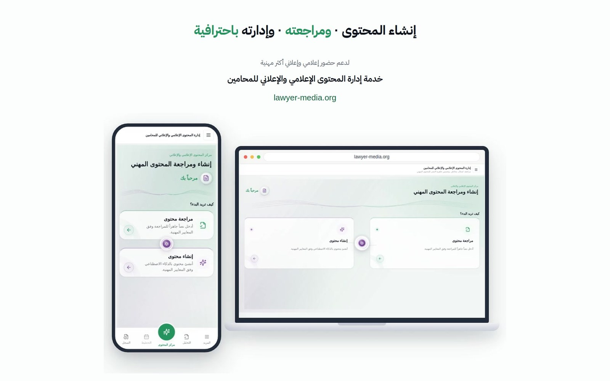

الأداة المساعدة لتمكين المحامي — lawyer-media.org
تأسيس وقيادة تطوير الأداة ضمن مشروع «الإطار التنظيمي للظهور الإعلامي والإعلاني للمحامين»: منصة فحص مسبق للنشر مدعومة بالذكاء الاصطناعي تُصدر توصيات مسندة إلى نظام المحاماة ولائحته التنفيذية وقواعد السلوك المهني للمحامين، مكمّلةً لضوابط الظهور الإعلامي والإعلاني.
- منصة إدارة المحتوى الإعلامي والإعلاني للمحامين
- محرك فحص الامتثال قبل النشر
- تقارير التوصيات المسندة إلى النصوص النظامية
